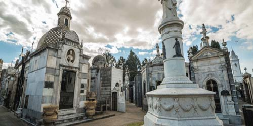

Cementerio
Este cementerio fue inaugurado el 17 de Noviembre de 1822, inicialmente recibió el nombre de Cementerio del Norte, debido al sitio donde se encontraba, fue diseñado por uno de los arquitectos más famosos de la época, el arquitecto francés Próspero Catelin, que también desarrollo otras obras de gran importancia para la ciudad de Buenos Aires.